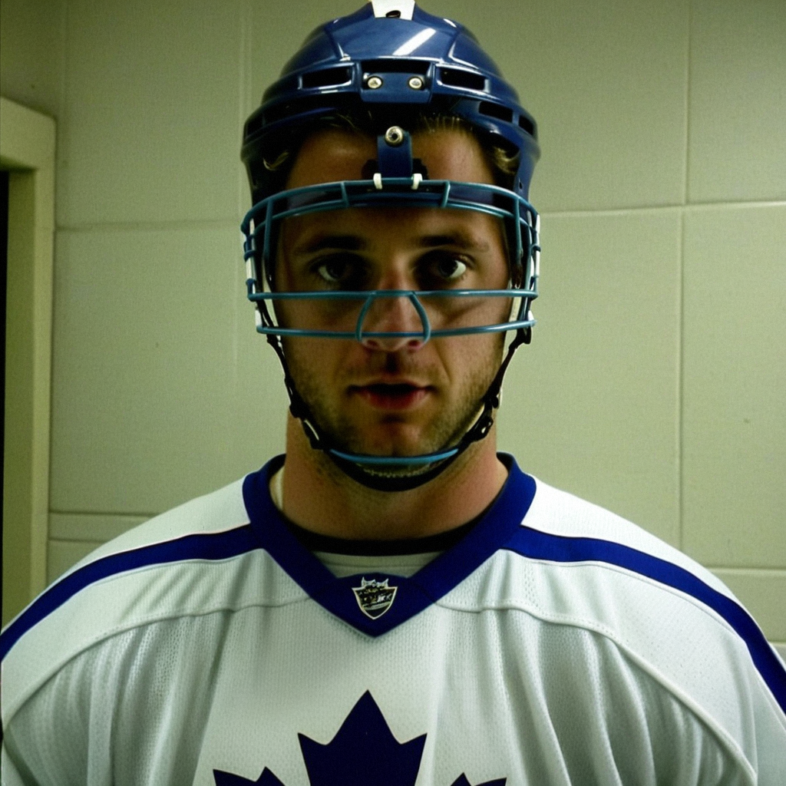

Gaborik: 'We had it, you know. Two points, and we give it away'
Toronto's speed winger on the overtime loss in Vancouver, the sequence he remembers, and why the standings do not interest him tonight.
 Marcus BellRinkside reporter · The Tunnel
Marcus BellRinkside reporter · The Tunnel
2:42 · synthetic voices, produced from the record · download
Marian Gaborik [308] and the  Toronto Maple Leafs had the best record in the league before tonight, 28 wins and 63 points on the board. In Vancouver, they lost 5-4 in overtime, and Gaborik finished with an assist on the game's second goal. He spoke to The Tunnel's Marcus Bell in the tunnel at general management's rink, still in his sweater, helmet under his arm.
Toronto Maple Leafs had the best record in the league before tonight, 28 wins and 63 points on the board. In Vancouver, they lost 5-4 in overtime, and Gaborik finished with an assist on the game's second goal. He spoke to The Tunnel's Marcus Bell in the tunnel at general management's rink, still in his sweater, helmet under his arm.
Transcript
Marcus Bell here with Marian Gaborik. Marian, fifty-four minutes of regulation and you're in overtime, you're on the road, you've got a chance to get back in it, and then it's over. How do you process that one walking off?
Well, you don't process it, you know. You just, uh, you get on the bus and you sit there and you think about the shift. The one before, or the one where you should be, how you say, a little more in the play. That's all you do. You can't fix it in the tunnel.
Vancouver came out and matched you physically tonight. Did you feel that, the weight of their forecheck?
No. No, I don't think so. I think we had more shots than them. Twenty to nineteen, you know? I think the problem was not the forecheck. The problem was, uh, the second period. They get the lead, and we chase. And when you chase, the game is different. You take more chance with the puck. So it's not, it's not that they're big. We make them look big, you know.
You had the secondary assist on the second goal, Mogilny's. Walk me through that play from where you were.
Yeah. So, Gary, he win the puck on the wall and he give it to me, and I just, I think I am wide open, right? So I carry, I carry across the blue line, and Sasha, he is already, how you say, he is already on the far post before the D knows. So I just, I put it there. The rest is his. I just need to find the man, that's all.
You've been on the ice in overtime before, of course, but what does it look like from your side? Are you thinking about structure, are you just playing?
You play. When the game is tied, you just play. You don't, you don't think about the coach's system in overtime. You think: get the puck, don't give the puck. That's the whole thing. And tonight, we give the puck. Once is enough. You know? You don't need two chances.
Marian, last time we spoke, you told me the table doesn't matter. Still sixty-three points, first in the league, one loss. Does the standing mean anything to you right now?
No. Tonight it doesn't. Tonight I am angry about the two points, not about the standing. Tomorrow I look, maybe. The coach look. But you know what, you win one and you forget, you lose one and you remember more. So maybe tomorrow I remember this one and it is good. But no, I don't look tonight.
Vancouver's twenty and ten. A real team, second in that division. What's your read on them, for whoever plays them next?
They play fast, you know. Not like us, not the speed, but they, how you say, they move the puck quick through the neutral zone. And the home crowd, here it is, it is loud. The building is full. So if you come here, you have to be ready from the first shift. We were not, maybe. Not in the first, I think.
One last one. You've got thirty-four goals on the season, your best pace since you came here. Do you feel the difference between this year and last?
I feel the difference. The legs are here. I don't know, maybe the summer, maybe the body, I don't know why. But when I go, I go, you know? And the guys, they find me. Sasha, Gary, Mats, they see me wide. So I just go. That's all.
Thanks, Marian. Back to you.